This is a tribute to my 2022 ski season while living in Bozeman, Montana. I logged 69 ski days, covered over 700 miles, and racked up 629,000 vertical feet. During the season, I skied my very first double-black run off the ridge at Bridger. I also enjoyed some dreamy powder days that put a huge smile on my face.
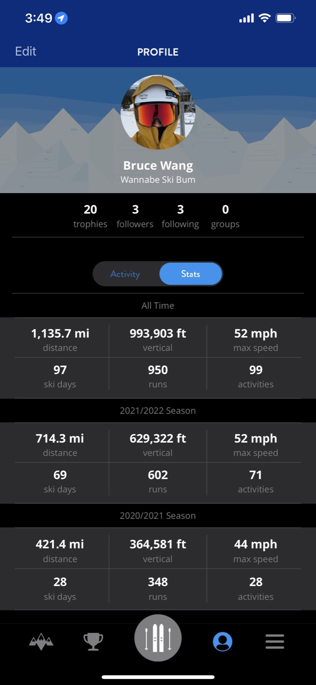
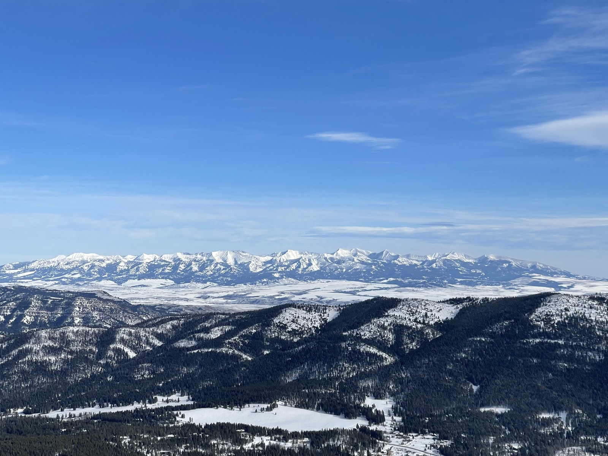
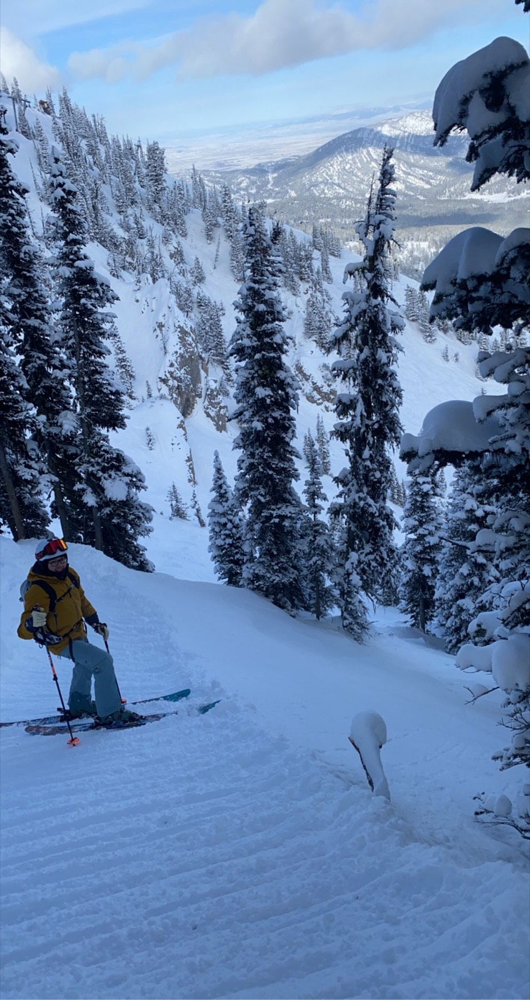
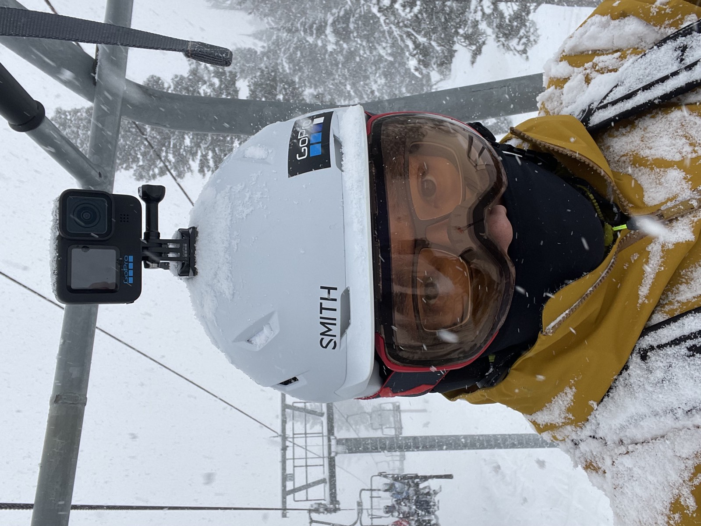
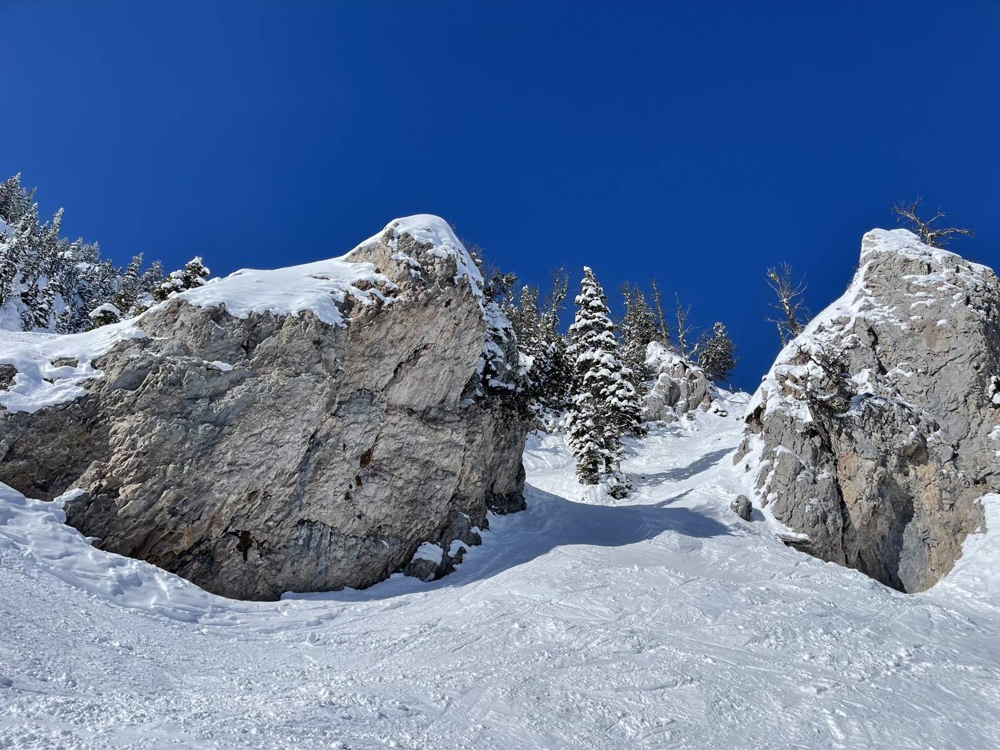
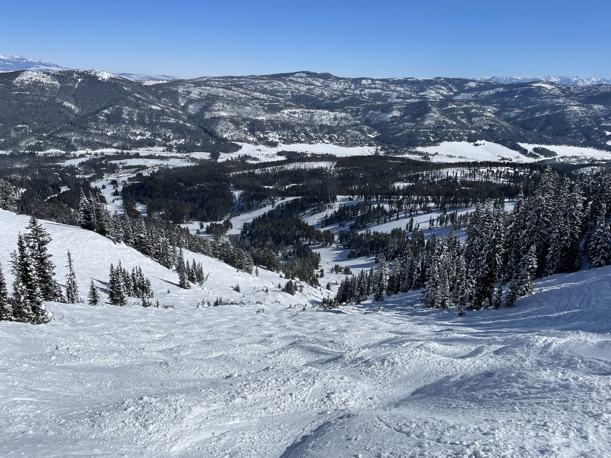
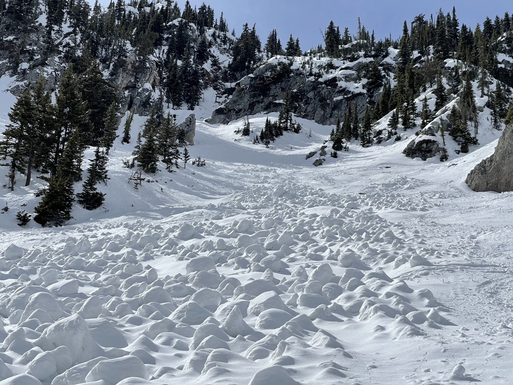
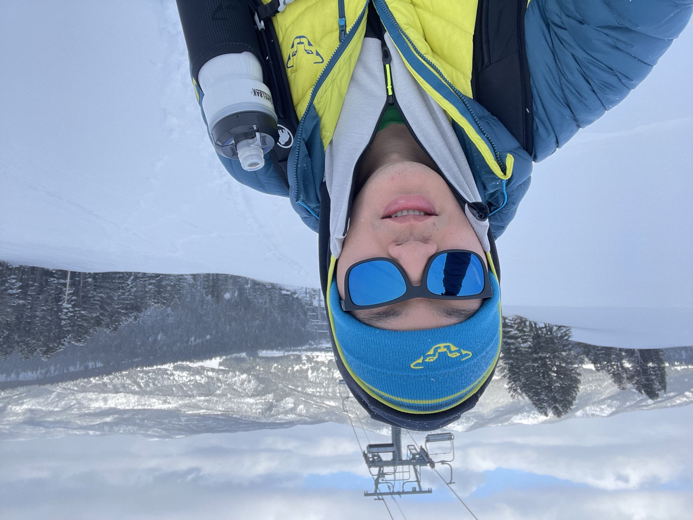
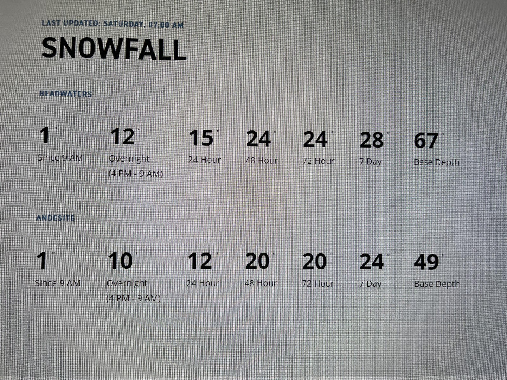
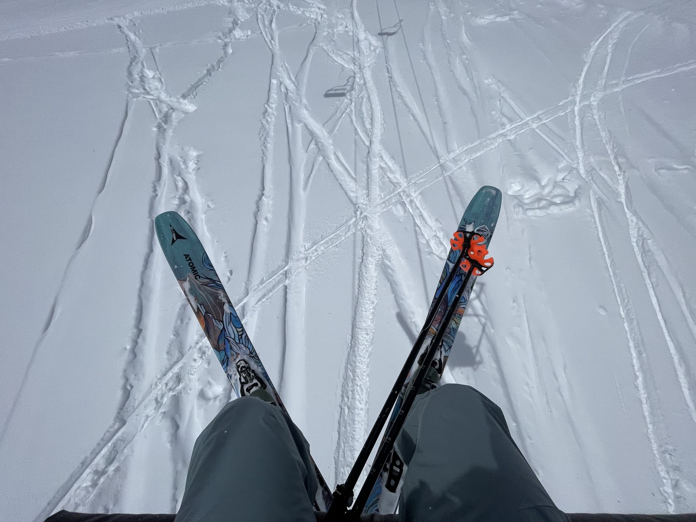
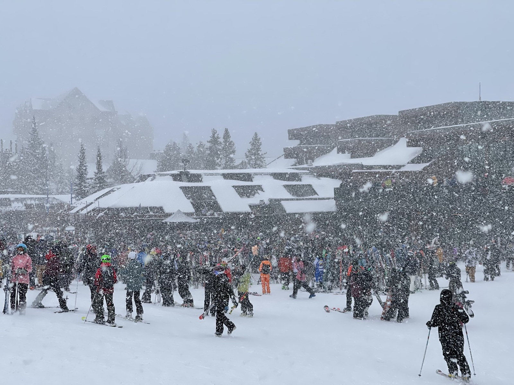
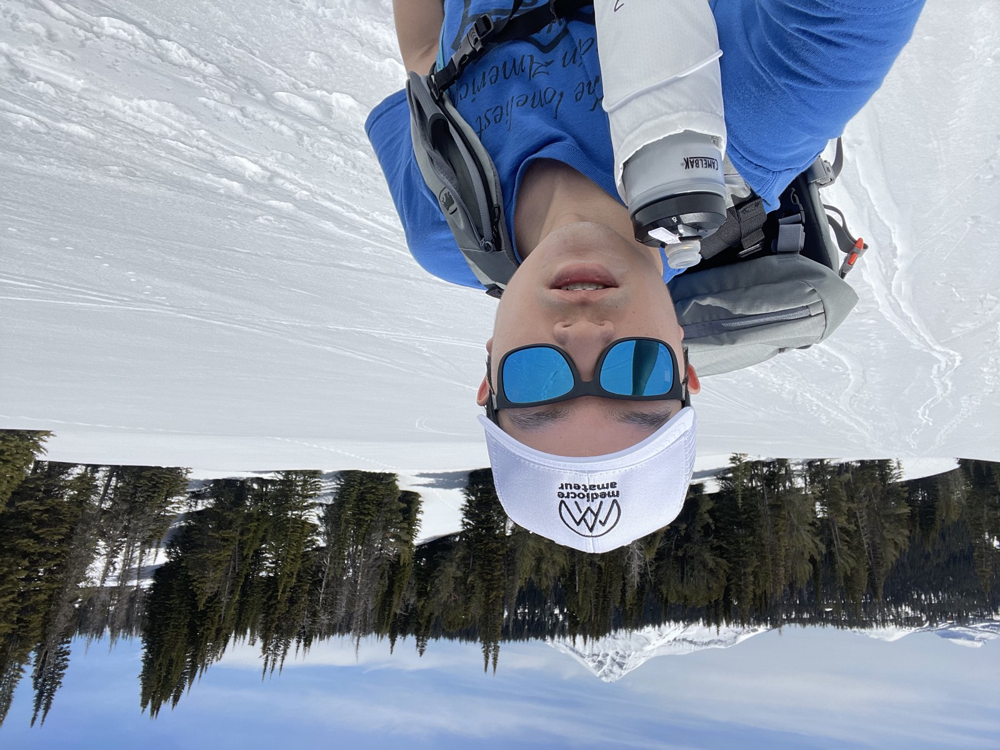